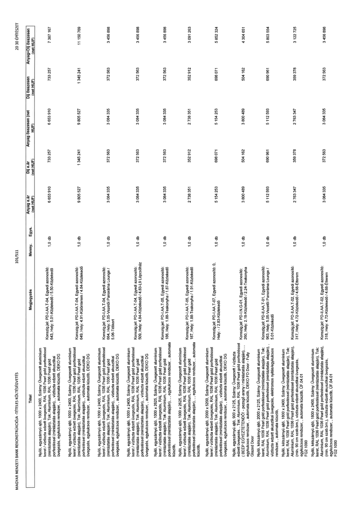

| Tétel | Megjegyzés | Menny. | Egys. | Anyag e.ár (net HUF) | Díj e.ár (net HUF) | Anyag összesen (net HUF) | Díj összesen (net HUF) | Anyag+Díj összesen (net HUF) |
|---|---|---|---|---|---|---|---|---|
| Nyíló, egyszárnyú ajtó, 1000 x 2400, Szárny: Üvegezett alumínium keret / víztiszta edzett üvegezés, RAL 1036 Pearl gold porfestéssel (mintáztatás alapján), Tok: Alumínium, RAL 1036 Pearl gold porfestéssel (mintáztatás alapján)., víztiszta edzett akusztikai üvegezés, elektromos nyitás / egységkulcsos rendszer,, automata küszöb, DEKO DG | Konszig.jel: PD-I.-AA.T-04, Egyedi azonosító: 643, Hely: 5.01-Közlekedő / 5.50-Közlekedő | 1,0 | db | 6 653 910 | 733 257 | 6 653 910 | 733 257 | 7 387 167 |
| Nyíló, egyszárnyú ajtó, 1000 x 2400, Szárny: Üvegezett alumínium keret / víztiszta edzett üvegezés, RAL 1036 Pearl gold porfestéssel (mintáztatás alapján), Tok: Alumínium, RAL 1036 Pearl gold porfestéssel (mintáztatás alapján)., víztiszta edzett akusztikai üvegezés, elektromos nyitás / egységkulcsos rendszer,, automata küszöb, DEKO DG | Konszig.jel: PD-I.-AA.T-04, Egyedi azonosító: 649, Hely: 4.91-Különterem / 4.84-Közlekedő | 1,0 | db | 9 805 527 | 1 345 241 | 9 805 527 | 1 345 241 | 11 150 769 |
| Nyíló, egyszárnyú ajtó, 1000 x 2400, Szárny: Üvegezett alumínium keret / víztiszta edzett üvegezés, RAL 1036 Pearl gold porfestéssel (mintáztatás alapján), Tok: Alumínium, RAL 1036 Pearl gold porfestéssel (mintáztatás alapján)., víztiszta edzett akusztikai üvegezés, elektromos nyitás / egységkulcsos rendszer,, automata küszöb, DEKO DG | Konszig.jel: PD-I.-AA.T-04, Egyedi azonosító: 664, Hely: 5.05-Vezetői Panoráma Lounge / 5.06-Télikert | 1,0 | db | 3 084 335 | 372 563 | 3 084 335 | 372 563 | 3 456 898 |
| Nyíló, egyszárnyú ajtó, 1000 x 2400, Szárny: Üvegezett alumínium keret / víztiszta edzett üvegezés, RAL 1036 Pearl gold porfestéssel (mintáztatás alapján), Tok: Alumínium, RAL 1036 Pearl gold porfestéssel (mintáztatás alapján)., víztiszta edzett akusztikai üvegezés, elektromos nyitás / egységkulcsos rendszer,, automata küszöb, DEKO DG | Konszig.jel: PD-I.-AA.T-04, Egyedi azonosító: 509, Hely: 4.84-Közlekedő / 4.83-L9 Lépcsőház | 1,0 | db | 3 084 335 | 372 563 | 3 084 335 | 372 563 | 3 456 898 |
| Nyíló, egyszárnyú ajtó, 1000 x 2625, Szárny: Üvegezett alumínium keret / víztiszta edzett üvegezés, RAL 1036 Pearl gold porfestéssel (mintáztatás alapján), Tok: Alumínium, RAL 1036 Pearl gold porfestéssel (mintáztatás alapján)., egységkulcsos rendszer,, automata küszöb, | Konszig.jel: PD-I.-AA.T-05, Egyedi azonosító: 186, Hely: 1.88-Teakonyha / 1.87-Közlekedő | 1,0 | db | 3 084 335 | 372 563 | 3 084 335 | 372 563 | 3 456 898 |
| Nyíló, egyszárnyú ajtó, 1000 x 2625, Szárny: Üvegezett alumínium keret / víztiszta edzett üvegezés, RAL 1036 Pearl gold porfestéssel (mintáztatás alapján), Tok: Alumínium, RAL 1036 Pearl gold porfestéssel (mintáztatás alapján)., egységkulcsos rendszer,, automata küszöb, | Konszig.jel: PD-I.-AA.T-05, Egyedi azonosító: 187, Hely: 1.88-Teakonyha / 1.91-Közlekedő | 1,0 | db | 2 738 351 | 352 912 | 2 738 351 | 352 912 | 3 091 263 |
| Nyíló, egyszárnyú ajtó, 2000 x 5200, Szárny: Üvegezett alumínium keret / víztiszta edzett üvegezés, RAL 1036 Pearl gold porfestéssel (mintáztatás alapján), Tok: Alumínium, RAL 1036 Pearl gold porfestéssel (mintáztatás alapján)., víztiszta edzett akusztikai üvegezés, egységkulcsos rendszer,, automata küszöb, DEKO DG | Konszig.jel: PD-I.-AA.T-07, Egyedi azonosító: 0, Hely: - / 2.83-Közlekedő | 1,0 | db | 5 154 253 | 698 071 | 5 154 253 | 698 071 | 5 852 324 |
| Nyíló, kétszárnyú ajtó, 900 x 2125, Szárny: Üvegezett / víztiszta edzett üvegezés, Tok: Alumínium, RAL 1036 Pearl gold porfestéssel ( BEÉP EGYEZTETENDŐ! - pezsgő arany / mintáztatás alapján)., egységkulcsos rendszer,, automata küszöb, DEKO FD Door - Fully Glazed Door | Konszig.jel: PD-I.-AA.T-01, Egyedi azonosító: 260, Hely: 2.18-Közlekedő / 2.24-Teakonyha | 1,0 | db | 3 800 489 | 504 162 | 3 800 489 | 504 162 | 4 304 651 |
| Nyíló, kétszárnyú ajtó, 2000 x 2125, Szárny: Üvegezett alumínium keret, RAL 1036 Pearl gold porfestéssel (mintáztatás alapján), Tok: Alumínium, RAL 1036 Pearl gold porfestéssel (mintáztatás alapján)., víztiszta edzett akusztikai üvegezés, elektromos nyitás/egységkulcsos rendszer,, automata küszöb, | Konszig.jel: PD-II.-AA.T-01, Egyedi azonosító: 963, Hely: 5.05-Vezetői Panoráma Lounge / 5.01-Közlekedő | 1,0 | db | 5 112 593 | 690 961 | 5 112 593 | 690 961 | 5 803 554 |
| Nyíló, kétszárnyú ajtó, 1800 x 2400, Szárny: Üvegezett alumínium keret, RAL 1036 Pearl gold porfestéssel (mintáztatás alapján), Tok: Alumínium, RAL 1036 Pearl gold porfestéssel (mintáztatás alapján)., (min. 90 cm szab.szél.), víztiszta edzett akusztikai üvegezés, egységkulcsos rendszer,, automata küszöb, ÜF.04.01 FG2 1090 | Konszig.jel: PD-II.-AA.T-02, Egyedi azonosító: 317, Hely: 4.72-Közlekedő / 4.68-Étterm | 1,0 | db | 2 763 347 | 359 378 | 2 763 347 | 359 378 | 3 122 725 |
| Nyíló, kétszárnyú ajtó, 1800 x 2400, Szárny: Üvegezett alumínium keret, RAL 1036 Pearl gold porfestéssel (mintáztatás alapján), Tok: Alumínium, RAL 1036 Pearl gold porfestéssel (mintáztatás alapján)., (min. 90 cm szab.szél.), víztiszta edzett akusztikai üvegezés, egységkulcsos rendszer,, automata küszöb, ÜF.04.01 FG2 1090 | Konszig.jel: PD-II.-AA.T-02, Egyedi azonosító: 318, Hely: 4.72-Közlekedő / 4.68-Étterem | 1,0 | db | 3 084 335 | 372 563 | 3 084 335 | 372 563 | 3 456 898 |
